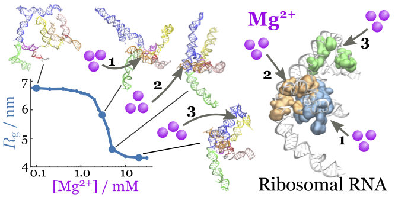

Nottingham Research Fellow at School of Pharamacy, University of Nottingham
Research interests
- RNA folding, structures and functions
- Macromolecular assembly (RNA-protein complexes, in particular)
- Translation system in the cell
- Computational methods and algorithms
- Palatability, functions and recipes of Natto
Publications
-
Shape changes and cooperativity in the folding of the central domain of the 16S ribosomal RNA
Hori N ; Denesyuk NA ; Thirumalai D
Proc. Natl. Acad. Sci. U.S.A. (2021) 118: e2020837118
10.1073/pnas.2020837118
[bioRxiv]
 - Theory and simulations for RNA folding in mixtures of monovalent and divalent cations Nguyen HT ; Hori N ; Thirumalai D Proc. Natl. Acad. Sci. U.S.A. (2019) 116(42): 21022-21030 10.1073/pnas.1911632116 [PDF]
- Ion Condensation onto Ribozyme is Site-Specific and Fold-Dependent Hori N ; Denesyuk NA ; Thirumalai D Biophys. J. (2019) 116(12): 2400-2410 10.1016/j.bpj.2019.04.037 [PDF] ---> Featured in New and Notable: "Site-Specific Binding of Non-Site-Specific Ions"
- Molecular Simulations of Ion Effects on the Thermodynamics of RNA Folding Denesyuk NA ; Hori N ; Thirumalai D J. Phys. Chem. B (2018) 122(50): 11860-11867 10.1021/acs.jpcb.8b08142
- Frictional Effects on RNA Folding: Speed Limit and Kramers Turnover Hori N ; Denesyuk NA ; Thirumalai D J. Phys. Chem. B (2018) 122(49): 11279-11288 10.1021/acs.jpcb.8b07129 [arXiv]
- Sequence-dependent Three Interaction Site (TIS) Model for Single and Double-stranded DNA Chakraborty D ; Hori N ; Thirumalai D J. Chem. Theory Comput. (2018) 14(7): 3763-3779 10.1021/acs.jctc.8b00091 [bioRxiv] [arXiv]
- Monovalent ions modulate the flux through multiple folding pathways of an RNA pseudoknot Roca J ; Hori N ; Baral S ; Velmurugu Y ; Narayanan R ; Narayanan P ; Thirumalai D ; Ansari A Proc. Natl. Acad. Sci. U.S.A. (2018) 115(31) E7313-E7322 10.1073/pnas.1717582115 [PDF]
- Protein Collapse is Encoded in the Folded State Architecture Samanta HS ; Zhuravlev PI ; Hinczewski M ; Hori N ; Chakrabarti S ; Thirumalai D Soft Matter (2017) 13(19): 3622-3638 10.1039/C7SM00074J [arXiv]
- Recognize Online Handwritten Bangla Characters Using Hausdorff Distance-Based Feature Sen S ; Sarkar R ; Roy K ; Hori N Proceedings of the 5th International Conference on Frontiers in Intelligent Computing (2017) 515: 541-549 Springer 10.1007/978-981-10-3153-3_54
- Handwritten Devanagari numerals recognition using grid based Hausdorff distance Bhowmik S ; Sen S ; Hori N ; Sarkar R ; Nasipuri M Computer, Communication and Electrical Technology (2017) 15-18 CRC Press ISBN 9781315400624
- Salt Effects on the Thermodynamics of a Frameshifting RNA Pseudoknot under Tension Hori N ; Denesyuk NA ; Thirumalai D J. Mol. Biol. (2016) 428(14): 2847-2859 10.1016/j.jmb.2016.06.002 [arXiv]
- How co-translational folding of multi-domain protein is affected by elongation schedule: Molecular simulations Tanaka T ; Hori N ; Takada S PLOS Comput. Biol. (2015) 11(7): e1004356 10.1371/journal.pcbi.1004356 [PDF]
- Coarse-grained structure-based model for RNA-protein complexes developed by fluctuation matching Hori N ; Takada S J. Chem. Theory Comput. (2012) 8(9): 3384-3394 10.1021/ct300361j
- CafeMol: A coarse-grained biomolecular simulator for simulating proteins at work Kenzaki H ; Koga N ; Hori N ; Kanada R ; Li W ; Okazaki K ; Yao XQ ; Takada S J. Chem. Theory Comput. (2011) 7(6): 1979-1989 10.1021/ct2001045
- Multiscale methods for protein folding simulations Li W ; Yoshii H ; Hori N ; Kameda T ; Takada S Methods (2010) 52: 106-114 10.1016/j.ymeth.2010.04.014
- Folding energy landscape and network dynamics of small globular proteins Hori N ; Chikenji G ; Berry RS ; Takada S Proc. Natl. Acad. Sci. U.S.A. (2009) 106(1): 73-78 10.1073/pnas.0811560106 [PDF]
Presentations
Academic & Professional Experience
- Mar 2020 - Present, Nottingham Research Fellow, University of Nottingham
- Jan 2016 - Mar 2020, Postdoctral Fellow, University of Texas at Austin (Prof. Thirumalai's lab)
- Feb 2014 - Dec 2015, Research Associate, University of Maryland (Prof. Thirumalai's lab)
- Apr 2013 - Dec 2013, Postdoctoral Fellow, Kyoto University (Prof. Takada's lab.)
- Apr 2010 - Mar 2013, JSPS Research Fellow (DC1) (Prof. Takada's lab.)
- Apr 2009 - Mar 2010, Research Associate, Kyoto University (Prof. Takada's lab.)
- Apr 2008 - Mar 2009, Software Engineer, Kozo Keikaku Engineering Inc.
Education
- Apr 2010 - Mar 2013, Ph.D. in Biophysics, Kyoto University (Prof. Takada's lab.)
- Apr 2006 - Mar 2008, M.Sc. in Chemistry, Kobe University
- Apr 2002 - Mar 2006, B.Sc. in Chemistry, Kobe University